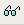

The Komodo debugger is a tool for analyzing programs on a line-by-line basis, monitoring and altering variables, and watching output as it is generated. Debugging features include:
The sections that follow contain general information about the debugger that is applicable to each language. Komodo provides debugging support for JavaScript, Perl, Python, PHP, Ruby, XSLT and Tcl. For information about configuring languages and language-specific debugger functions, see:
Notes
To start the debugger, do one of the following:
By default, the Debugging Options dialog box is displayed (unless the debugger preference has been configured to start without displaying the dialog box). To override the debugger preference on Windows and Linux systems, hold down the 'Ctrl' key while invoking the key binding for starting the debug session. (Select Help|List Key Bindings to view the current key bindings; use the key bindings preference to configure custom key bindings.) Alternatively, the 'Ctrl' key can be used to suppress the display of the Debugging Options dialog box.
If multiple files are open in the Editor Pane, the program that is currently displayed is debugged. If no breakpoints are set, Go/Continue causes the debugger to run to the end without stopping. Step In moves through the program one line at a time.
If the Bottom Pane is hidden, Komodo automatically shows it.
To run a program without debugging, do one of the following:
To run a program to the current cursor position, do one of the following:
By default, the debugger will break on the first line of executable code when it starts. This is useful for adding breakpoints if none have been set yet. To change this behavior, set Initial break behavior to Run to first breakpoint in the debugger preferences (Edit|Preferences|Debugger).
Komodo supports the concurrent debugging of multiple applications, or multi-session debugging. With multi-session debugging, Komodo debugs more than one project at a time, regardless of the supported languages used in the programs being debugged.
When debugging multiple sessions, each session has a unique Debug tab (located in the Bottom Pane) for controlling the debug actions specific to that process. A Debug tab is created each time a new debugger session is started. To close a Debug tab, click the X button at the top right corner.
To start multiple debugging sessions, do one of the following:
When the debugger is invoked, the Debugging Options dialog box is displayed. Use this to configure the system environment, command-line arguments, CGI environment, and other debugging options.
Not all of the debugging options described below apply to all languages. The available tabs and fields depend on the interpreter used to debug the file. The interpreter is determined by the File Associations configured for the active file in the Editor Pane.
To suppress the display of the Debugging Options dialog box on Windows and Linux systems, hold down the 'Ctrl' key while clicking the desired debugging button on the Debug Toolbar, or use the desired keyboard shortcut. Change the default display by selecting Skip debug options dialog from Edit|Preferences|Debugger.
These options are displayed regardless of which configuration tabs are available.
output_buffering setting in
php.ini with a ";" character, or set it to
"off".The Environment tab displays all environment variables set on the system. Use this tab to add new variables or change the values of existing variables for the duration of the debug session. The Default Environment Variables pane displays environment variables that have been declared on your system. The User Environment Variables pane displays environment variables set in the saved configuration which override the Default Environment Variables.
Change variables by adding a new variable with the same name and a new value. These changes have no effect outside of the Komodo debugger and are stored in each saved configuration.
The CGI Environment tab is only displayed if the Simulate CGI Environment check box is selected on the General tab. It displays CGI Environment Variables commonly configured on a web server. Use this tab to alter existing variables and add new variables. Variable changes have no effect outside of the Komodo debugger and are stored in each saved configuration.
The CGI Input tab is only displayed if the Simulate CGI Environment check box is selected on the Global Options tab. It is used to configure the CGI form type and variables for the purpose of simulating CGI input. Note that Komodo's CGI emulation does not generate HTTP Request Headers; rather, it executes the CGI directly by emulating a web server environment.
Use the Request Variable section of the dialog box to create variables that are processed by your CGI program. These variables are displayed in the Browser Arguments section of the dialog box.
To alter variables: Click on the desired variable in the Browser Arguments section of the dialog box, make changes in the Type, Name and Value fields, then click Update.
To delete variables: click on the desired variable in the Browser Arguments section of the dialog box, and click Delete.
Debugging options can be saved as "named configurations" in the Debug Configuration panel. To save the current configuration:
Existing saved configurations can be selected from the drop-down list. If you wish to delete a saved configuration, select it from the list and click Delete.
If the file being debugged is part of a project that is currently open, these preferences are saved in that project. If not, this configuration is automatically saved as part of the file's Properties and Settings (although they cannot be altered via the file's Properties dialog box).
Breakpoints are set at lines in the program where you want program execution to pause. Enabled breakpoints appear as solid red circles in the left margin of the Editor pane and are also listed on the Breakpoints tab during debugging. Disabled breakpoints appear as white circles with a red outline. Double-clicking on an enabled or disabled breakpoint from the Breakpoints tab opens the associated file in the Editor Pane and shifts focus to the line number for that break location.
Spawnpoints are set at points in a Tcl script where you want an external application to execute (spawn). When a spawnpoint is encountered during the debugging process, Komodo configures the spawned application to start as a new debugger session. Both the initial and spawned debugger sessions run concurrently. Enabled spawnpoints appear as solid green arrows in the left margin of the Editor pane and are also listed on the Breakpoints tab during debugging. Disabled spawnpoints appear as white arrows with a green outline. Double-clicking an enabled or disabled spawnpoint from the Breakpoints tab opens the associated file in the Editor pane and shifts focus to the line number coinciding with that spawnpoint location.
Breakpoints and spawnpoints can be monitored and managed on the Breakpoints tab in the Bottom pane (displayed during debugging or invoked by selecting View|Tabs & Sidebars|Command Output). This tab lists all breakpoints and spawnpoints set in the program. Use the Breakpoints tab to:
Breakpoints and Spawnpoints can be toggled between enabled, disabled and deleted. To toggle a breakpoint, do one of the following:
To create a new breakpoint in the Breakpoints tab:
To delete a breakpoint in the Breakpoints tab, do one of the following:
To clear or remove multiple breakpoints, do one of the following:
To disable or enable all breakpoints:
To add a Tcl spawnpoint, use the Breakpoints tab:
C:\samples\tcl_sample.tcl).To delete a spawnpoint in the Breakpoints tab, do one of the following:
To clear or remove multiple spawnpoints, do one of the following:
To disable or enable all spawnpoints:
Note: Breakpoints and spawnpoints added or modified while a program is running are not necessarily updated in the breakpoint manager. To add breakpoints while debugging, interrupt the debugging session using the Break button to ensure that the new breakpoint is properly updated.
To open the source code in the Editor Pane at the line number where the breakpoint or spawnpoint is set, do one of the following:
When adding or editing a breakpoint in the Breakpoint tab, a Breakpoint Properties dialog box appears. This dialog box contains a tab for each available breakpoint type. Change the breakpoint type by switching to a different tab.
Each tab is split into two parts, separated by a horizontal line. The top section contains configuration items that are required; the bottom section contains configuration options that are optional. The last item on this tab is the Enable checkbox.
0==0, as the
condition would always evaluate to true and cause the debugger
to break. The condition should be specified in the syntax of
the language selected in the Language
drop-down list.For example:
for 1 in range(256): print 'hello'
Not all breakpoint types are supported for all languages. The following table shows breakpoint support by language:
| Type | Tcl | Perl | PHP | XSLT | Python |
| Line Number | Yes | Yes | Yes | Yes | Yes |
| Function Call | No | Yes | Yes | Yes | Yes |
| Function Return | No | Yes | Yes | Yes | Yes |
| Exception | No | No | Yes | No | Yes |
| Conditional | Yes | Yes | Yes | Yes | Yes |
| Watch | Yes | Yes | No | No | Yes |
Use the Break Now function to stop debugging an application at the current execution point, and then continue debugging from that point. For example, use this control when debugging applications running long processes. To force a break while debugging an application, do one of the following:
Remote debugging usually involves executing code on a remote machine while observing and controlling the debugging process from within Komodo. Remote debugging sessions are initiated from the command line or from code in the program itself. This approach is useful for debugging applications in the environments where they are ultimately run (e.g. CGI programs on a live web server), and for client/server applications.
Komodo can be set to Listen for Debugger Connections continuously. Additionally, you can set remote debugger preferences and check listener status of the current listener configuration. For instructions on configuring specific languages for remote debugging, see:
Remote debugging is most commonly used to debug programs on a remote server, but there are other instances where it is useful or necessary:
Consult the language-specific debugging documentation listed above for configuration instructions.
To toggle continuous listening for remote debugging, do one of the following:
Note: A check mark appears when Listen for Debugger Connections is enabled. Otherwise, this feature is disabled.
To check the status and current configuration of the Komodo debugger:
When multiple users are running Komodo session, configure Komodo's Debugger Connection Options to listen for debug connections on port "0" (see Set Debugger Preferences). The system provides Komodo with a unique port each time Komodo is started, allowing multiple users on the system to debug applications simultaneously. In remote debugging, this requires the remote debugger application to be manually set to connect on the system-allocated port unless the Debugger Proxy is used.
By default, Komodo recieves a read-only copy of the program from the debugger. You can set breakpoints in this copy to control how it executes, but you cannot make changes to it or have the breakpoints persist across debugging sessions. For Komodo to open an editable copy of the file (i.e. the original program file), a URI mapping must be created to link the file on the remote filesystem with the URI Komodo receives from the remote debugger.
The incoming URI for a remote debugging session is in the form:
file://server name or ip address/path/to/file
For example, the file '/www/htdocs/php/info.php' on a server
named 'myserver', would send the following URI to Komodo:
file://myserver/www/htdocs/php/info.php
If 'myserver' was accessible via SFTP, you could add the
following mapping in Komodo's Preferences:
URI: file://myserver/www
Path: sftp://user@myserver/apache/www
This mapping would apply to all files in www and its subdirectories.
The Path can include remote files accessed via FTP, SFTP or SCP as well as files on the local filesystem.
Mapped URIs can also be specified by right-clicking on the editor tab and selecting Create Mapped URI from the context menu. By default, the Path field will show the full path of the file in that editor tab. This path can be shortened to include more files and directories in the mapping (as above).
Remote debugger processes can communicate with Komodo through the DBGP proxy (debugger protocol proxy). The proxy allows Komodo to use a system-allocated listener port for debugging without the user having to manually configure the same port number on the remote debugger. This is useful for running multiple remote debugging sessions and on networks where a remote debugging process can not connect to Komodo directly. The proxy can run on the local machine, the remote machine, or a separate machine.
A typical DBGP Proxy connection is established as follows:
localhost or 127.0.0.1 if the debugger is
running locally.To start the proxy on Windows:
set PYTHONPATH="<Komodo install directory>\lib\support\dbgp\pythonlib;%PYTHONPATH%" cd <Komodo install directory>\lib\support\dbgp\bin pydbgpproxy
To start the proxy on Linux (requires Python 2.2 or later):
export PYTHONPATH=<Komodo install directory>/lib/support/dbgp/pythonlib;$PYTHONPATH cd <Komodo install directory>/lib/support/dbgp/bin python pydbgpproxy
To start the proxy on OS X:
export PYTHONPATH=<Komodo install directory>/Contents/SharedSupport/dbgp/pythonlib;$PYTHONPATH cd <Komodo install directory>/Contents/SharedSupport/dbgp/bin python pydbgpproxy
The following options are available:
stout and can be set to
CRITICAL, ERROR, WARN, INFO or DEBUG.Example
If you are debugging scripts on a remote web server that cannot connect to Komodo directly because of a firewall, you can run dbgpProxy on an intermediary server (e.g. a gateway) which can connect to Komodo and the web server on specified ports. The three servers in this example are:
gateway:9001dbgpProxy -i gateway:9001 -d gateway:9000
The debugging process on 'webserver' is launched with the following command:
python dbgpClient.py -d gateway:9000 -k "jdoe" test.py
The remote debugger running on 'webserver' (dbgpClient.py in this case) connects to the proxy (dbgpProxy.py) running on 'gateway'. The proxy uses the IDE Key "jdoe" to connect the debugger process to the Komodo instance listening with a Proxy Key of "jdoe". The proxy continues to communicate with the remote debugger on port 9000, but routes the debugging session to Komodo on port 37016.
When a program prompts for input, enter the desired input in the console window or Output tab (depending on the Debugging Options configuration), and press Enter to continue.
This table lists common tasks and their Komodo commands.
| To do this | Press this |
| Run
a program The debugger runs until the program ends. |
|
|
Start the debugger The debugger runs until it encounters a breakpoint, or until the program ends. |
|
| Step
In The debugger executes the next unit of code, and then stops at the subsequent line. |
|
| Step
Over Like Step In, Step Over executes the next unit of code. However, if the next unit contains a function call, Step Over executes the entire function then stops at the first unit outside of the function. |
|
| Step
Out The debugger executes the remainder of the current function and then stops at the first unit outside of the function. |
|
| Run to
Cursor The debugger runs until it reaches the line where the cursor is currently located. |
|
| Break
Now Pause debugging an application at the current execution point. Go/Continue continues debugging from that point. |
|
|
Stop Stop the debugging session. Go/Continue restarts debugging from the beginning of the program. |
|
| Toggle
breakpoint Enables, disables, or deletes a breakpoint on the current line. |
|
| Show Current
Statement Moves the editing cursor from any position in the file to the statement at which the debugger is stopped. |
|
|
Detach Stop the debugging process but continue application process execution. |
|
Instead of running to the end of a program or to the next breakpoint, the debugger can also step through code one statement at a time. The following Debug menu items and toolbar buttons control stepping behavior:
When stepping through a program which calls a function or method from an external program (e.g. a module or package) the debugger steps into the external program at the point where the function or method is called, opening it in a new tab. Stepping continues in the external program until the function call is completed.
Note: Perl operators sort,
map, and grep behave like other looping
constructs with respect to stepping behavior in the debugger.
When Komodo has stopped at one of these operators, Step
Over stops at the first statement or expression used
within the first argument of these operators.
For example, if the debugger steps over a statement containing
a foreach, while, map,
grep, or sort looping construct that
evaluates its body five times, the debugger remains inside that
loop for five iterations. When it steps over on the sixth
iteration, the debugger exits the loop and stops at the next
statement.
To skip execution of such looping constructs, set a breakpoint on the statement following the construct, and continue until Komodo reaches that breakpoint.
When the Komodo debugger is started, the Debug tab opens in the Bottom Pane. This tab consolidates views of the debugger output, call stack, program variables (local and global), and watch variables. The Debug tab also contains a Debug Toolbar for stepping in, out, over, and running functions while debugging.
When debugging more than one session at a time (multi-session debugging), a Debug tab for each session is accessible in the Bottom Pane. The Debug tab selected is the session currently being debugged. To change to another debug session, select the Debug tab for that session (identified by the filename of the program). When a new session is started, a new Debug tab is created and Komodo automatically switches to that new session.
The Debug tab is divided into two sub-panes, which have tabs of their own. The right sub-pane contains the Output, Call Stack, and HTML Preview tabs. The left sub-pane contains variable tabs.
The variables section of the Debug tab is divided into tabs that vary according to the language of the program being debugged. (Language variations are described below.) Variables with multiple values (such as arrays) are indicated by plus and minus symbols to the left of the variable name.
To Expand or Collapse Variables: Plus symbols indicate variables with multiple values that can be expanded; minus symbols indicate variables that can be collapsed. Click on the plus or minus symbol to expand or collapse the variable list.
To Change Variable Values: Double-click in the variable's Value field and enter the desired value. (The value of nodes in XML documents cannot be changed.)
While debugging Python programs, variables and objects are displayed on the Locals, Globals, and Code Objects tabs:
During Python debugging sessions, click the Show
Hidden Variables  button to display special
Python variables prefixed with double underscores, such as
__doc__, __dict__, etc.
While debugging PHP and Tcl programs, variables are displayed on the Locals and Globals tabs:
While debugging Perl programs, Argument and Special tabs are displayed in addition to the Locals and Globals tabs listed above.
While debugging XSLT programs, data nodes and variables are displayed on the Locals and Globals tabs:
xsl:param
and xsl:variable elements declared at the top
level of the program.The Watch variable tab monitors selected variables and expressions. Use the Watch variable tab to watch variables, or expressions based on variables, by typing expressions, dragging and dropping expressions from an editor, or selecting variables from one of the other variable tabs. Also, use the Watch tab to change the value of a variable or remove a variable from the Watch tab.
Watched variables can be added, manipulated and removed regardless of whether the debugger is currently running.
To watch one or more variables during program execution:
The Watch variable tab supports viewing the
results of expressions made with watched variables. For example,
in a Perl program with scalar variables $base and
$height the following expression could be
entered:
($base / 2) * $height
To enter arbitrary expressions on the Watch variable tab:
To change the values of variables:
Note: This function is not available for arbitrary expressions.
To remove a variable from the Watch variable tab, select the variable and click Delete on the bottom right toolbar. Alternatively, right-click the desired variable and select Remove Watch on the context menu.
The Output tab is used to view program output and to send input to the program being debugged. The following standard data streams are handled in the Output tab:
stdout: program outputstderr: errorsstdin: program input (not supported for Perl
or PHP during remote debugging)When debugging Tcl and Python, if stdin is
requested by the program, a red percent character is shown in the
margin of the Output tab.
If the program produces HTML output, select the HTML tab to preview the rendered output. Unlike the Output tab, the HTML preview is not constantly updated. Use the Reload HTML View button in the bottom-pane toolbar to update the preview.
The call stack is a data area or buffer used for storing requests that need to be handled by the program. Komodo's stack stores temporary data such as variables and parameters and operates as a push-down list. New data moves to the top of the stack and pushes the older data down in a "last-in, first-out" arrangement.
To view the call stack in a current debugging session, select the Call Stack tab in the right pane of the Debug tab.
There is one line in this tab per stack frame at any point in the execution of a program. The calling frame contains the information about a function call, including the filename, the line number, and any parameters or local variables.
When debugging a program that writes output to another file, or when watching programs execute, you can watch the output or the log file using Komodo's File Watcher.
The Watch File tool shows a file as the file is being updated on disk. It has no relationship with variable viewing, except that, while debugging, it is often useful to watch variables change state and files change content.
To use the File Watcher:
Use the Detach control to stop the debugging process but continue running the application. When application execution is detached from the debugging process, output continues to print on the Debug tab until the application finishes running.
To detach application execution from the debugging process, do one of the following:
To stop the Komodo debugger, do one of the following:
The debug session ends.